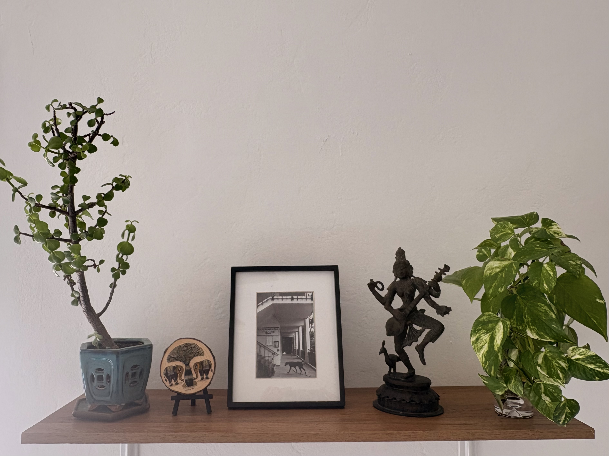

I gained deep appellate experience during my eight years as a senior research attorney at the California Court of Appeal, Fourth District Division One in San Diego. After two years on the court’s central staff, I served six years as a chambers attorney for Hon. William S. Dato. During my tenure, I helped prepare 135 appellate opinions dealing with a wide range of civil, criminal, family, dependency, and delinquency matters. I harness that experience to provide exceptional representation for my clients in state and federal appeals and petitions for habeas corpus and post-conviction relief. Since founding Sitara Human Rights Law, I have helped clients navigate the appeals process and come out on top.
Where the court omitted an element of the offense from jury instructions, I secured reversal of that conviction. I also prevailed in invalidating a probation condition as unconstitutional for delegating judicial authority to the probation department.
Addressing a novel question of statutory interpretation, I helped my client clear his name and obtain a certificate of rehabilitation and governor’s pardon under Penal Code 4852.01. The AG conceded error on both claims.
Where one trial judge revoked another judge’s probation modification order and staked out exclusive jurisdiction over probation supervision, I prevailed in arguing on appeal that one trial judge may not constitutionally overrule another.
Get in Touch
Contact Mytili